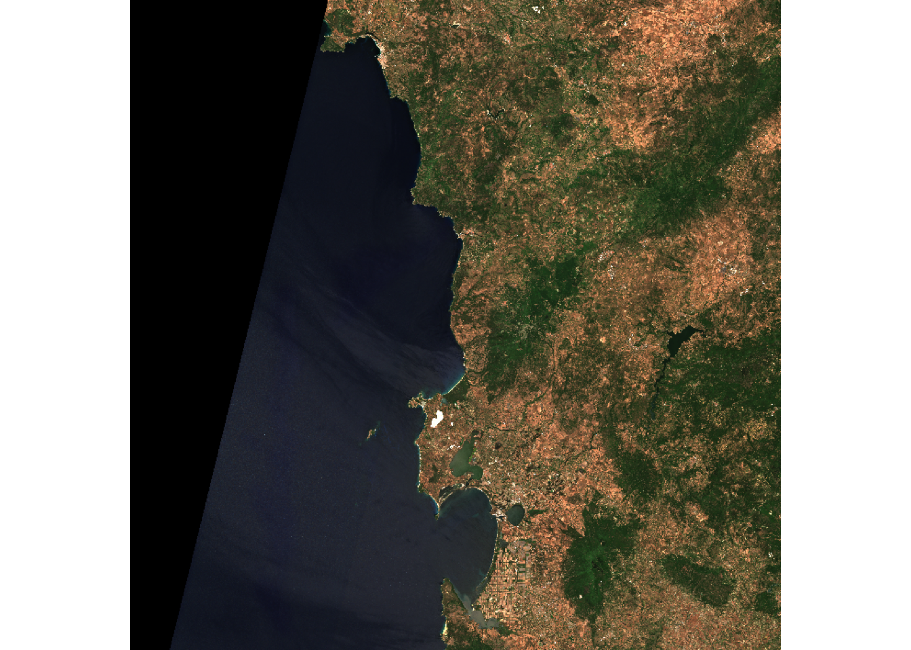

library(rstac)
library(terra)
library(tidyverse)
library(Rarr)
library(stars)
library(fs)Fire Detection
Introduction
Wildfires are serious natural hazard that can dramatically affect human and the ecosystems. Monitoring these events is essential for assessing ecological impact, supporting recovery planning, and improving future fire-management strategies. Satellite imagery provides an effective way to observe burned areas over large regions, even in remote or inaccessible locations.
In this notebook, we use Sentinel-2 Level-2A imagery to visualize and analyze a wildfire event by comparing images before and after the fire. By creating visual composites and calculating burn-related spectral indices, we can clearly identify the extent of damage and understand how the landscape has changed.
What we will learn
- 🚀 Access and prepare Sentinel-2 L2A imagery for wildfire detection.
- 🛰️ Visualize pre-fire and post-fire scenes using true-color composite.
- 🛰️ Compare pre-fire and post-fire images to identify the affected areas..
The case study
In this notebook, we focus on the same fire event examined in “the EOPF Zarr in Action tutorial” a fire that occurred in the Province of Nuoro in the Italian region of Sardinia on June 10th, 2025.
Import packages
Access Sentinel-2 L2A imagery for Pre and Post-fire event using Rstac
# Time range for the pre-fire event (one week before the event)
pre_f = "2025-06-03T01:00:00Z/2025-06-04T05:00:00Z"
# Time range for the post-fire event (about 10 days after the event)
post_f = "2025-06-21T01:00:00Z/2025-06-22T05:00:00Z"
# Bounding box (xmin, ymin, xmax, ymax) covering the burned area in Nuoro, Sardinia
search_bbox = c(8.847198, 40.193395, 8.938865, 40.24189)stac_source <- stac("https://stac.core.eopf.eodc.eu/")
stac_source |>
get_request()###Catalog
- id: eopf-sample-service-stac-api
- description: STAC catalog of the EOPF Sentinel Zarr Samples Service
- field(s):
type, id, title, description, stac_version, conformsTo, links, stac_extensionsderive_store_array <- function(store, product_url) {
store |>
mutate(array = str_remove(path, product_url)) |>
relocate(array, .before = path)
}
# Acccess the Pre-Fire image using rstac
pre_stac_query <- rstac::stac_search(
q = stac_source,
collections = "sentinel-2-l2a",
bbox = search_bbox,
datetime = pre_f,
limit = 999
)
executed_pre_stac_query <- rstac::get_request(pre_stac_query)
# Read Pre-Fire product using product URL
pre_s2_l2a_product <- executed_pre_stac_query$features[[1]] |>
assets_select(asset_names = "product")
pre_s2_l2a_product_url <- pre_s2_l2a_product |>
assets_url()
pre_zarr_store <- pre_s2_l2a_product_url |>
zarr_overview(as_data_frame = TRUE) |>
derive_store_array(pre_s2_l2a_product_url)
# Quicklook for Pre-Fire RGB
pre_zarr_store |>
filter(array == "/quality/l2a_quicklook/r20m/tci") |>
pull(path) |>
read_zarr_array() |>
aperm(c(2, 3, 1)) |>
rast() |>
plotRGB()
⛔ Unfortunately we were not successful when trying to access the post-fire image: invalid char in json text.
# Acccess the Post-Fire image using rstac
post_stac_query <- rstac::stac_search(
q = stac_source,
collections = "sentinel-2-l2a",
bbox = search_bbox,
datetime = post_f,
limit = 999
)
executed_post_stac_query <- rstac::get_request(post_stac_query)
executed_post_stac_query###Items
- features (1 item(s)):
- S2C_MSIL2A_20250621T100611_N0511_R022_T32TMK_20250623T084315
- assets:
AOT_10m, B01_20m, B02_10m, B03_10m, B04_10m, B05_20m, B06_20m, B07_20m, B08_10m, B09_60m, B11_20m, B12_20m, B8A_20m, product, product_metadata, SCL_20m, SR_10m, SR_20m, SR_60m, TCI_10m, WVP_10m
- item's fields:
assets, bbox, collection, geometry, id, links, properties, stac_extensions, stac_version, type# Read Post-Fire product using product URL
post_s2_l2a_product <- executed_post_stac_query$features[[1]] |>
assets_select(asset_names = "product")
post_s2_l2a_product_url <- post_s2_l2a_product |>
assets_url()
post_zarr_store <- post_s2_l2a_product_url |>
zarr_overview(as_data_frame = TRUE) |>
derive_store_array(post_s2_l2a_product_url)Error: lexical error: invalid char in json text.
"fill_value": NaN },
(right here) ------^# Quicklook for Post-Fire RGB
post_zarr_store |>
filter(array == "/quality/l2a_quicklook/r20m/tci") |>
pull(path) |>
read_zarr_array() |>
aperm(c(2, 3, 1)) |>
rast() |>
plotRGB()Error in h(simpleError(msg, call)): error in evaluating the argument 'x' in selecting a method for function 'plotRGB': error in evaluating the argument 'x' in selecting a method for function 'rast': error in evaluating the argument 'a' in selecting a method for function 'aperm': error in evaluating the argument 'x' in selecting a method for function 'grepl': object 'post_zarr_store' not found